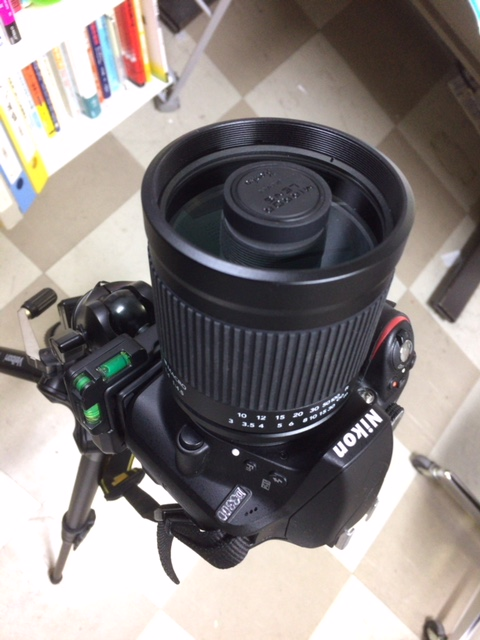

| ・ 皆既月食 (H30.01.31) | |||
今日はミラーレンズで皆既月食を撮ってみました．だいたい望遠レンズは重いものですが，ミラーレンズは主鏡と副鏡のおかげで非常に軽いです．実験などで，カメラ2台以上を同時に使う際は軽いと調整が楽で良いです．とくに位相回復ホログラフィの場合は10 μm程度の精度が求められるため，重いと調整ステージに乗らないし，z軸合わせをしても重さでx軸やy軸にもズレてしまいます．根気よくメカ調整して，最後は画像処理で追い込みます．といっても，画処が使える前提はズレが微小なので，ハードの追い込みが大事です．はじめは3時間以上でも，ハードとソフトが連携するシステム構築が出来ると30分以内です． |
|||
|
部分食はとれましたが，肝心の皆既食は雲で見えませんでした． |

ミラーレンズ | ||